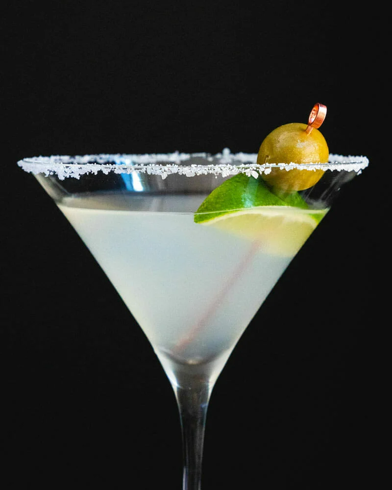

Mexican Martini

The Margarita born in Austin Texas
The presentation calls for the margarita to be served in a martini glass, with olives on a spear
Ingredients
- 2 ounces top shelf tequila
- 1 ounce Cointreau
- 1 ounce fresh lime juice
- 3/4 ounce fresh orange juice
- 1/2 ounce olive brine
- olives
Preparation
- Wet half the lip of a martini glass and dip in salt and chill the glass
- Pour the liquid ingredients into a cocktail shaker and fill with ice. Shake vigorously for 10 seconds. Strain into the glass.
- Garnish with olives on a spear.